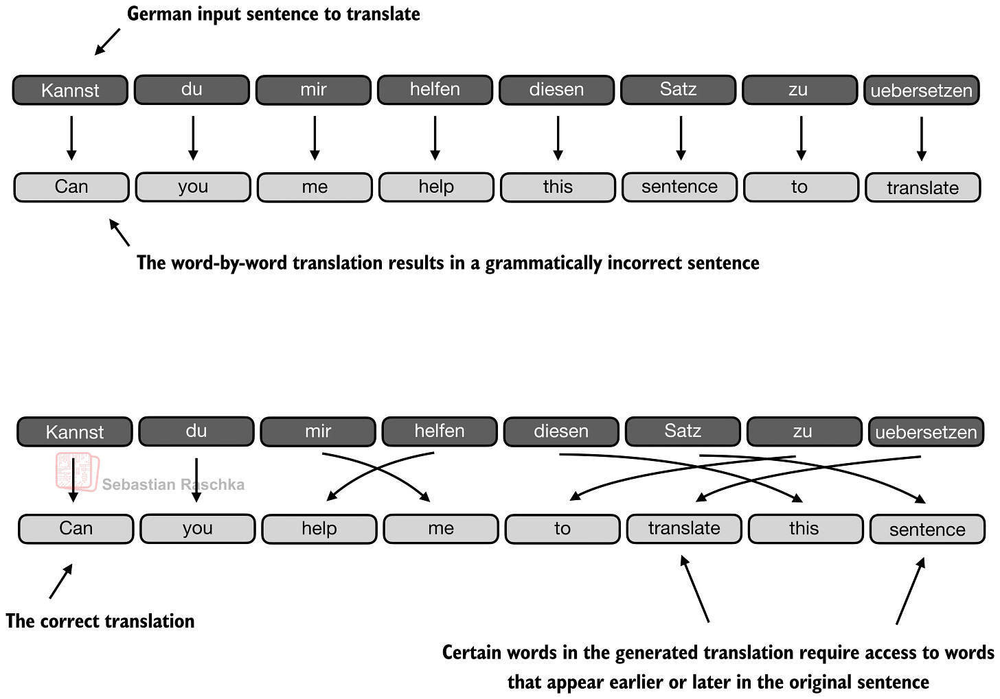
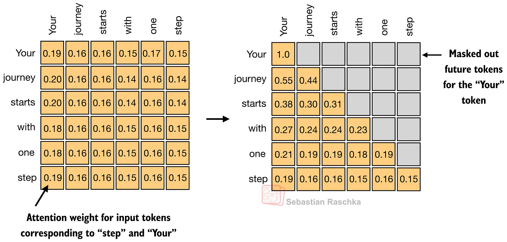
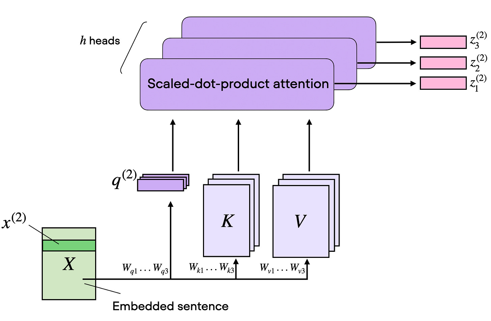
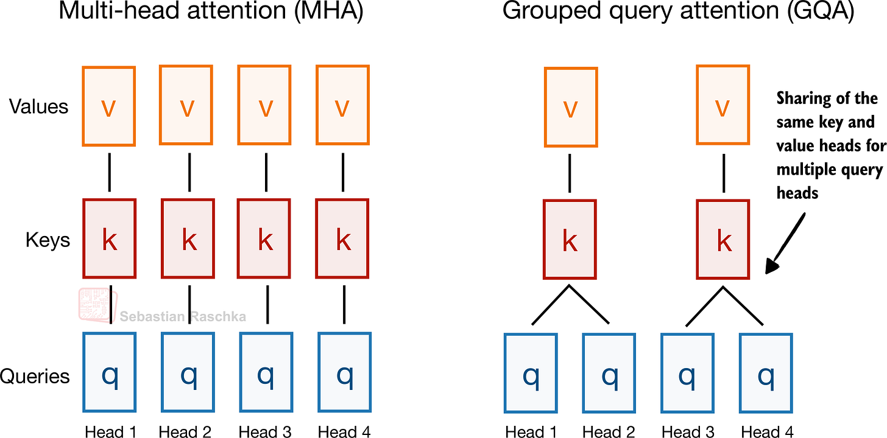
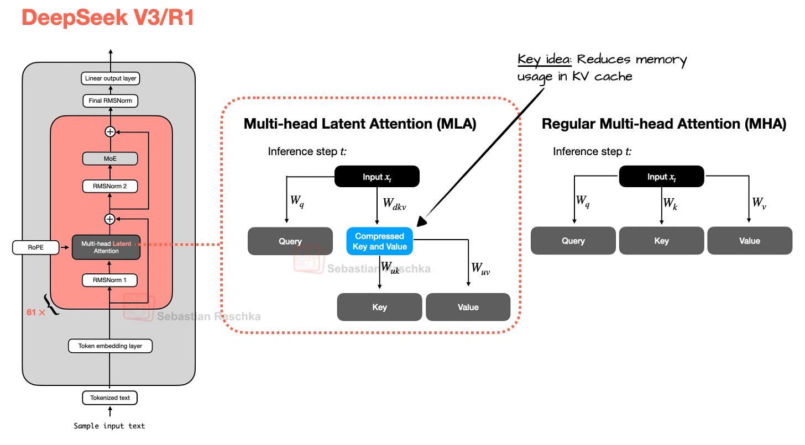
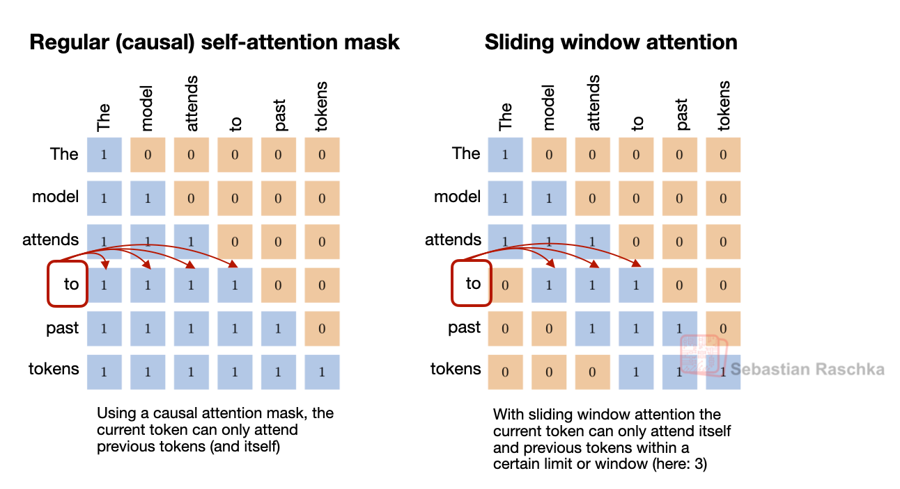
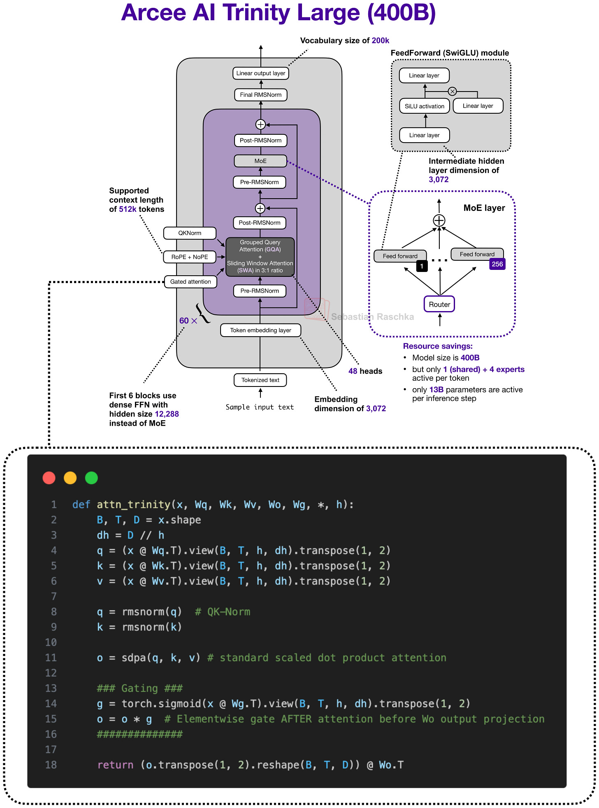
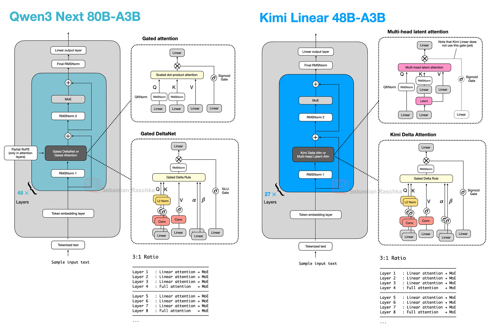
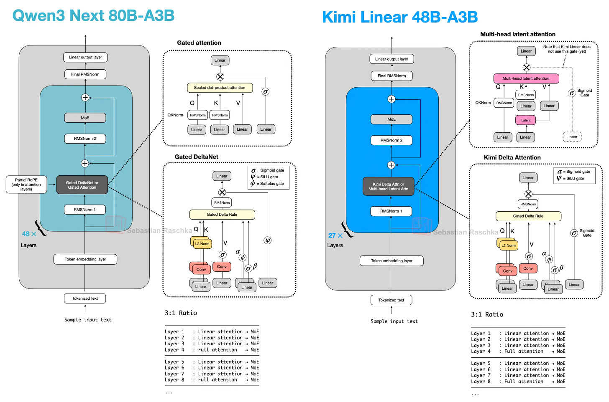
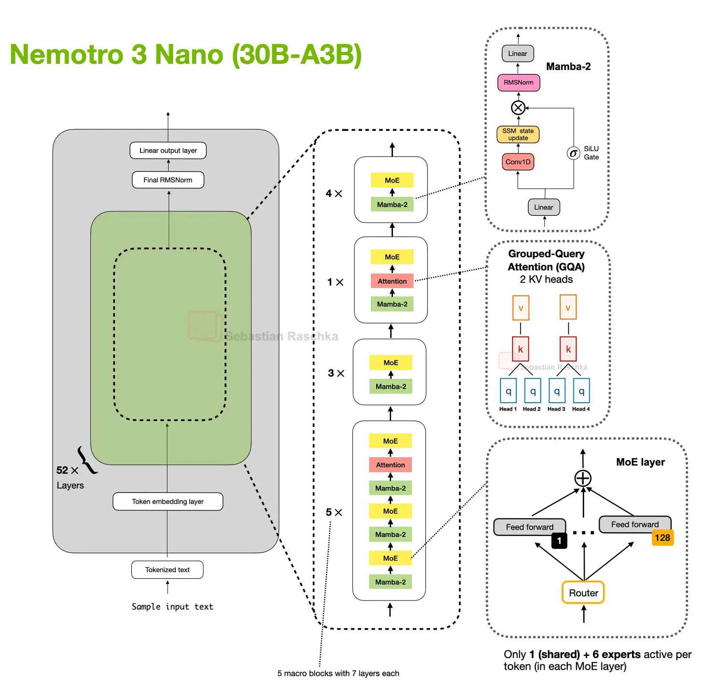

TL;DR
- 이 글은 현대 오픈웨이트 LLM에서 실제 채택된 어텐션 변형들을 한 번에 정리한다: MHA → GQA → MLA → SWA → DeepSeek Sparse Attention → Gated/Hybrid 계열.
- 핵심 축은 두 가지다:
- 품질(모델링 성능) 유지, 2) 긴 컨텍스트 추론 비용(KV-cache/메모리/연산) 절감.
- GQA는 구현/학습 난이도가 낮고 안정적이라 현재도 매우 널리 쓰인다.
- MLA는 캐시를 잠재공간으로 압축해 대규모·장문맥에서 더 유리할 수 있지만 구현이 복잡하다.
- SWA/DeepSeek Sparse는 “어디를 볼지(attention pattern)”를 줄이는 방향, GQA/MLA는 “무엇을 저장할지(cache representation)”를 줄이는 방향이다.
- 최신 추세는 Hybrid: 비싼 풀 어텐션 층을 일부만 남기고, 나머지를 선형/상태공간 계열 블록으로 대체해 장문맥 효율을 크게 높인다.
1) 배경: 왜 어텐션 변형이 계속 나오는가
RNN 기반 encoder-decoder는 정보를 압축된 hidden state에 몰아넣어야 해서 긴 문장/장문맥에서 병목이 생겼다. 트랜스포머의 self-attention은 토큰 간 직접 참조를 가능하게 해 이를 완화했다. 하지만 컨텍스트 길이가 128k~1M으로 커지면서, 이제 병목은 정확도보다 추론 비용(특히 KV-cache와 attention 계산) 쪽으로 이동했다.
즉, 최근 변형은 대부분 아래 질문에 대한 설계 답변이다.
- 얼마나 많이 저장할 것인가? (GQA, MLA)
- 어떤 토큰만 볼 것인가? (SWA, Sparse)
- 어떤 층만 비싼 attention을 남길 것인가? (Hybrid)

2) 기준점: Self-Attention / MHA
핵심 메커니즘
입력 임베딩 (X)를 통해
- (Q = XW_Q), (K = XW_K), (V = XW_V)
- score: (QK^T)
- 정규화: (A = \text{softmax}(QK^T / \sqrt{d_k}))
- 출력: (Z = AV)
디코더 LLM에서는 causal mask로 미래 토큰을 가린다. 길이 (T)일 때 attention 행렬은 기본적으로 (T \times T) 스케일을 가진다.

MHA의 의미
MHA는 위 연산을 여러 head에서 병렬 수행해 서로 다른 관계(국소 의존, 의미적 연관, 구문 등)를 학습한다. 정확도 관점에서 강력하지만, 긴 컨텍스트 추론 시 KV 저장/대역폭 비용이 커진다.

장점: 표현력 높고 표준적, 성숙한 생태계
단점: 장문맥에서 메모리/연산 부담 큼
3) GQA (Grouped-Query Attention)
아이디어
MHA처럼 query head는 여러 개 유지하되, 여러 query head가 key/value를 공유한다. 즉 K/V head 수를 줄인다.
- MHA: 각 Q head가 사실상 독립 K/V를 가짐
- GQA: 여러 Q head → 소수의 K/V 그룹 공유
- 극단: K/V를 1그룹으로 만들면 MQA(더 저렴하지만 품질 저하 위험 증가)

왜 많이 쓰이나
- KV-cache 절감이 매우 크고, 시퀀스 길이가 길수록 이득이 커진다.
- MHA 대비 구현 변경이 크지 않다.
- MLA 대비 구현·학습 난이도 낮고 안정적.
트레이드오프
- K/V 공유를 과하게 하면 모델링 성능 하락 가능
- 실무적으로는 MHA와 MQA 사이의 중간 지점(적절한 group 수)이 sweet spot
요약: “복잡도 대비 효율”이 좋아 여전히 사실상 표준 선택지.
4) MLA (Multi-head Latent Attention)
아이디어
GQA가 “head 공유”로 비용을 줄인다면, MLA는 캐시 저장 자체를 잠재표현(latent)으로 압축해 줄인다.
- GQA: K/V의 개수를 줄임
- MLA: 저장되는 K/V의 표현 차원/형태를 압축

장점
- 대규모/장문맥에서 KV 병목이 큰 환경에서 매우 매력적
- DeepSeek-V2 계열 ablation에서, 동일 효율대에서 GQA보다 성능 유지가 좋거나 MHA를 넘는 사례가 제시됨(튜닝 전제)

단점
- 구현/서빙 스택이 복잡
- 작은 모델(글에서 언급된 경험칙: 대략 100B 미만)에서는 GQA가 더 다루기 쉬울 수 있음
요약: 대형 모델로 갈수록 “복잡하지만 강력한” 업그레이드 경로.
5) SWA (Sliding Window Attention)
아이디어
각 토큰이 전체 prefix 대신 최근 고정 창(window) 만 보게 한다(로컬 어텐션).

실전 포인트
“SWA를 쓴다”보다 중요한 것은:
- local:global 층 비율 (예: 5:1, 3:1)
- window 크기 (예: 1024 vs 128)
이 두 knob로 비용-성능 균형을 조절한다.
장단점
- 장점: 긴 문맥 비용 큰 폭 절감
- 단점: 전역 정보 회수가 어려워질 수 있어 global layer를 주기적으로 섞는 설계가 흔함
GQA와의 관계
SWA는 “얼마나 많은 과거 토큰을 볼지”를 줄이고, GQA는 “토큰당 KV 저장량”을 줄이므로 상호보완적이다. 실제로 동시 채택 사례가 많다.
6) DeepSeek Sparse Attention
SWA와의 공통점/차이
- 공통점: 전체 prefix가 아니라 부분집합만 본다.
- 차이점: SWA는 “최근 window”를 하드코딩, DeepSeek Sparse는 학습 기반 선택.
메커니즘(글 기준)
- Lightning Indexer가 과거 토큰 relevance를 점수화
- Token Selector가 상위 토큰(top-k 등)만 남겨 sparse mask 구성
즉, “로컬이라서 본다”가 아니라 “중요해서 본다”에 가깝다.

MLA와의 결합 의미
- MLA: 캐시 표현 압축(무엇을 저장)
- Sparse: 참조 패턴 희소화(어디를 볼지)
서로 다른 축 최적화라 결합 시 장문맥 비용 절감 효과가 누적된다.
7) Gated Attention
Gated Attention은 독립 계열이라기보다, 풀 어텐션 블록을 안정화/제어하는 개조형에 가깝다.
주요 변경:
- attention 출력에 output gate 적용(잔차 합류 전 스케일 제어)
- q/k 정규화에서 zero-centered QK-Norm 변형 사용
- partial RoPE
핵심은 MLA처럼 구조를 갈아엎는 것이 아니라, 하이브리드 스택 내 “남겨둔 풀 어텐션 층”을 더 예측 가능하게 만드는 것.

8) Hybrid Attention (최근 큰 흐름)
개념
하이브리드는 하나의 메커니즘이 아니라 아키텍처 패턴이다.
- 비싼 full attention 층은 소수 유지
- 다수 층은 선형/재귀/상태공간 계열 모듈로 대체

대표 패턴
- Qwen3-Next/3.5: (대체로) 3:1 비율로 경량 블록 + Gated Attention
- Kimi Linear: 경량 측을 Kimi Delta Attention으로, 무거운 측을 gated MLA로 교체
- Ling 2.5: 경량 측을 Lightning Attention, 무거운 측은 MLA
- Nemotron: 더 과감하게 Mamba-2 중심 + 소수 attention 층


핵심 트레이드오프
- 장점: 컨텍스트 길이가 늘수록 메모리/연산 증가율 완화, 고처리량 목표에 유리
- 단점: 정확한 retrieval 성능/스택 성숙도/서빙 최적화에서 아직 변동성 존재
저자 관점도 동일: 하이브리드는 매우 유망하지만, 로컬 추론에서는 전통적 GQA 기반 스택이 토큰 처리량에서 유리한 경우가 여전히 있다.
9) 변형별 비교 요약 (실무 관점)
- MHA: 정확도 기준선, 장문맥 비용 큼
- GQA: 가장 실용적인 기본 효율화(안정·단순)
- MLA: 대규모에서 강력한 고급 효율화(복잡)
- SWA: 로컬 창 기반 비용 절감, 비율/창 크기 튜닝 핵심
- DeepSeek Sparse: 학습 기반 토큰 선택 희소화(신규·복잡)
- Gated Attention: 하이브리드 내 잔존 full attention 안정화
- Hybrid: 미래 지향적 큰 방향(효율 우선), 다만 스택 성숙도는 진행 중
10) 실전 적용 체크리스트
- 중소형/빠른 제품화: GQA + (필요 시) SWA부터 시작
- 초장문맥/초대형 모델: MLA(+Sparse) 후보 검토
- 서빙 난이도 허용 가능 여부: 복잡도(MLA/Hybrid) 대비 이득 검증
- 평가셋 구성: 단순 벤치마크 외 장문맥 retrieval·latency·메모리 동시 측정
- 아키텍처 선택 기준: “이론상 최고”보다, 데이터/인프라/지연 목표에 맞는 “학습된 모델”의 실제 성능
한 줄 결론
현재의 어텐션 진화는 “새로운 마법 레이어” 경쟁이라기보다, 장문맥 시대의 비용 병목을 어디서 줄일지에 대한 체계적 분업(저장/참조/층구성)으로 수렴하고 있다.